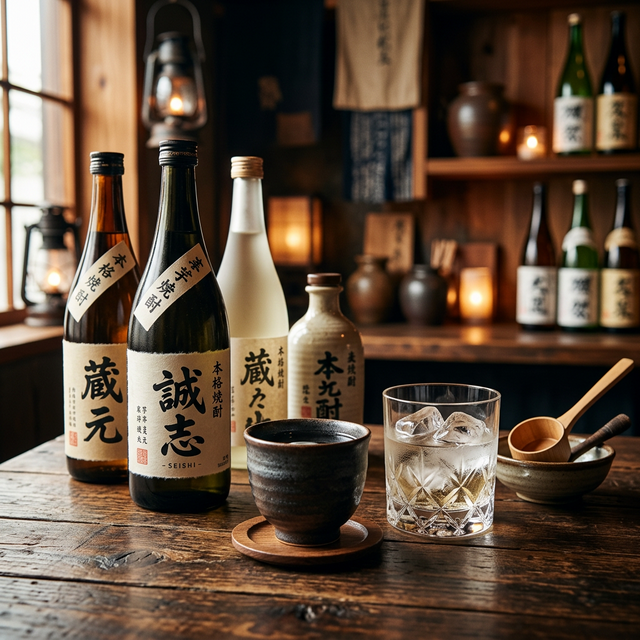

「焼酎って種類が多すぎて、どれを選べばいいか分からない…」
そんな悩みを持つ初心者の方から、さらに深い知識を求める愛飲家の方まで、本格焼酎の世界は驚くほど奥深いものです。芋、麦、米、黒糖、そして沖縄の泡盛。原料によってこれほどまでに香りと味わいが変わるお酒は他にありません。
今回は、全国の銘柄を熟知した筆者が、「今こそ飲むべき至高の銘柄ランキング10選」をご紹介。さらに、それぞれの個性を最大限に引き出す「通」な飲み方も伝授します。あなたの晩酌を劇的に変える一本を、一緒に見つけましょう！
📋 この記事の目次
第1位：魔王（芋）｜鹿児島
白玉醸造 魔王（芋焼酎）
芋焼酎 焼酎界の王様として君臨し続ける「魔王」。かつお節のような芳醇な香りと、芋特有のクセを極限まで抑えた「フルーティーで穏やかな口当たり」が最大の特徴です。
「魔王」という名前とは裏腹に、その味わいは極めてエレガント。焼酎が苦手な方でも「これなら飲める！」と驚くほどの透明感があります。ロックでゆっくりと、温度が上がるにつれて広がる香りを楽しむのが正解です。
![[商品価格に関しましては、リンクが作成された時点と現時点で情報が変更されている場合がございます。]](https://hbb.afl.rakuten.co.jp/hgb/51f018a2.ad7f33ea.51f018a3.76266b74/?me_id=1371100&item_id=10020112&pc=https%3A%2F%2Fthumbnail.image.rakuten.co.jp%2F%400_mall%2Ffirst19782012%2Fcabinet%2Fitem%2Fitem_shochu%2Fitem_shochu_2%2F2001867.jpg%3F_ex%3D240x240&s=240x240&t=picttext "[商品価格に関しましては、リンクが作成された時点と現時点で情報が変更されている場合がございます。]")

第2位：赤兎馬（芋）｜鹿児島
濱田酒造 薩州 赤兎馬（せきとば）
芋焼酎 三国志の名馬から名付けられたこの焼酎は、その名の通り力強い飲みごたえがありながら、後味は驚くほどサラリとしています。「重厚感と透明感の共存」が、多くのファンを惹きつけて止みません。
おすすめは「冷やしてストレート」またはロック。特殊なフィルターで濾過された淡麗な味わいは、一口飲むごとに喉を駆け抜けるような爽快感を与えてくれます。脂の乗ったお刺身や、スパイシーな料理とも抜群の相性です。
![[商品価格に関しましては、リンクが作成された時点と現時点で情報が変更されている場合がございます。]](https://hbb.afl.rakuten.co.jp/hgb/51f01919.1f72bf8d.51f0191a.fed1d5c7/?me_id=1294306&item_id=10010475&pc=https%3A%2F%2Fthumbnail.image.rakuten.co.jp%2F%400_mall%2Fchagatapark%2Fcabinet%2Fimg02%2F3248-187594.jpg%3F_ex%3D240x240&s=240x240&t=picttext "[商品価格に関しましては、リンクが作成された時点と現時点で情報が変更されている場合がございます。]")
第3位：三岳（芋）｜屋久島
三岳酒造 三岳
芋焼酎 世界自然遺産・屋久島の豊かな名水で仕込まれた「三岳」。その味わいは名水の如く澄み渡り、芋の甘みを引き立てつつ、雑味のない非常にクリアな口当たりを実現しています。
おすすめは「お湯割り」。5対5や6対4で割ると、屋久島の原生林を思わせる爽やかな香りが立ち上がり、心まで温めてくれます。地元の愛飲家も「やっぱり三岳！」と唸る、飽きのこない毎日飲める名品です。
![[商品価格に関しましては、リンクが作成された時点と現時点で情報が変更されている場合がございます。]](https://hbb.afl.rakuten.co.jp/hgb/51f019f4.24ca3d8d.51f019f5.1665f5ac/?me_id=1283966&item_id=10000014&pc=https%3A%2F%2Fthumbnail.image.rakuten.co.jp%2F%400_mall%2Fauc-fukuyoshisaketen%2Fcabinet%2Fmitake%2Fmitake_re.jpg%3F_ex%3D240x240&s=240x240&t=picttext "[商品価格に関しましては、リンクが作成された時点と現時点で情報が変更されている場合がございます。]")
第4位：黒霧島（芋）｜宮崎
霧島酒造 黒霧島
芋焼酎 日本一の売上を誇る「黒霧」。黒麹仕込みならではの「トロッとした甘み」と「キリッとした後切れ」の良さは、どんな料理も引き立てる万能選手です。
おすすめは「水割り」や「ソーダ割り」。脂っこいお肉料理や、味の濃いおつまみと一緒に流し込めば、口の中をスッキリとリセットしてくれます。コストパフォーマンスも非常に高く、常に一本は常備しておきたい安心感があります。
![[商品価格に関しましては、リンクが作成された時点と現時点で情報が変更されている場合がございます。]](https://hbb.afl.rakuten.co.jp/hgb/51f01aa5.4526e97f.51f01aa7.4c001c90/?me_id=1381142&item_id=10059267&pc=https%3A%2F%2Fthumbnail.image.rakuten.co.jp%2F%400_mall%2Fyo-sake222%2Fcabinet%2F01%2F29%2F20059478x01.jpg%3F_ex%3D240x240&s=240x240&t=picttext "[商品価格に関しましては、リンクが作成された時点と現時点で情報が変更されている場合がございます。]")
第5位：いいちこ（麦）｜大分
三和酒類 いいちこ
麦焼酎 焼酎初心者の方にまず勧めるのが、この「いいちこ」です。厳選された大麦・大麦麹と天然の清冽な水で醸された、「澄んだ香りとまろやかな深み」は、まさに麦焼酎の完成形。
ロックはもちろん、熱燗にしても麦の香ばしさが引き立ち、至福のひとときを演出してくれます。クセが全くないため、カクテルベースとしても優秀。長年愛され続けるには、確かな理由があります。
![[商品価格に関しましては、リンクが作成された時点と現時点で情報が変更されている場合がございます。]](https://hbb.afl.rakuten.co.jp/hgb/51f01c1e.61f07e5b.51f01c1f.2d3b2e1d/?me_id=1294451&item_id=10544004&pc=https%3A%2F%2Fthumbnail.image.rakuten.co.jp%2F%400_mall%2Fmatsukiyo%2Fcabinet%2Fd0021%2F4906666111127_1.jpg%3F_ex%3D240x240&s=240x240&t=picttext "[商品価格に関しましては、リンクが作成された時点と現時点で情報が変更されている場合がございます。]")
第6位：中々（麦）｜宮崎
黒木本店 中々（なかなか）
麦焼酎 伝統的な手造り麹にこだわる「中々」は、大麦の香ばしい風味が極めて上品に表現されています。「キャラメルやナッツを思わせるクリーミーな香り」が、喉元を優雅に通り過ぎます。
この一本の真価は「お湯割り」で発揮されます。40度くらいのぬるめのお湯で割ると、麦のポテンシャルが最大限に開花し、重層的な味わいを楽しむことができます。静かな夜にじっくり付き合いたい、大人のための麦焼酎です。
![[商品価格に関しましては、リンクが作成された時点と現時点で情報が変更されている場合がございます。]](https://hbb.afl.rakuten.co.jp/hgb/51f01d1e.56a63b3e.51f01d1f.e6e268a4/?me_id=1237671&item_id=10000071&pc=https%3A%2F%2Fthumbnail.image.rakuten.co.jp%2F%400_mall%2Fsake-ichibun%2Fcabinet%2F01782786%2Fimgrc0088155512.jpg%3F_ex%3D240x240&s=240x240&t=picttext "[商品価格に関しましては、リンクが作成された時点と現時点で情報が変更されている場合がございます。]")
第7位：鳥飼（米）｜熊本
鳥飼酒造 吟香鳥飼（鳥飼）
米焼酎 日本最古の歴史を誇る球磨焼酎の中でも、この「鳥飼」は異端にして至高の一本。グラスに注いだ瞬間、「完熟したバナナやメロンのようなフルーティーな香り」が部屋中に広がります。
「本当にこれ、焼酎なの？」と疑いたくなるような華やかさは、まさに大吟醸酒そのもの。キンキンに冷やしたグラスに注ぎ、ワインのように香りを楽しんでください。和食はもちろん、フレンチなどの洋食とも驚くほどマッチします。
![[商品価格に関しましては、リンクが作成された時点と現時点で情報が変更されている場合がございます。]](https://hbb.afl.rakuten.co.jp/hgb/51f01e25.25624935.51f01e26.2fe12acf/?me_id=1310172&item_id=10000303&pc=https%3A%2F%2Fthumbnail.image.rakuten.co.jp%2F%400_mall%2Fhinoya-sake%2Fcabinet%2F04232117%2F11738020%2Fimgrc0101004635.jpg%3F_ex%3D240x240&s=240x240&t=picttext "[商品価格に関しましては、リンクが作成された時点と現時点で情報が変更されている場合がございます。]")
第8位：れんと（黒糖）｜奄美大島
奄美大島開運酒造 れんと
黒糖焼酎 クラシック音楽を聴かせて熟成させるという、独自の製法で造られる「れんと」。その効果か、味わいは驚くほどまろやかで、「ラム酒のような甘い香りと爽快なキレ」を同時に楽しめます。
レモンを絞ったり、ライムを入れたりする「サワー」スタイルも最高。黒糖独特の苦みは一切なく、女性や普段あまりお酒を飲まない方にも圧倒的な人気を誇ります。奄美の青い海を想像しながら、トロピカルな気分を味わってください。
![[商品価格に関しましては、リンクが作成された時点と現時点で情報が変更されている場合がございます。]](https://hbb.afl.rakuten.co.jp/hgb/51f01f65.7faf05a5.51f01f66.4b554618/?me_id=1232702&item_id=10000034&pc=https%3A%2F%2Fimage.rakuten.co.jp%2Fnoni-o-f%2Fcabinet%2Fshochu720%2Fimgrc0084289947.jpg%3F_ex%3D240x240&s=240x240&t=picttext "[商品価格に関しましては、リンクが作成された時点と現時点で情報が変更されている場合がございます。]")
第9位：瑞泉 青龍（泡盛）｜沖縄
瑞泉酒造 瑞泉 青龍
泡盛 沖縄の伝統酒・泡盛の中でも、3年以上熟成させた「古酒」の魅力を手軽に味わえるのが「青龍」です。「バニラのような甘い香りと、厚みのあるコク」に、初めて飲んだ方はきっと驚くはずです。
おすすめは「ロック」でちびちびと。氷が溶けるにつれて変化する味わいは、まさに至福。チョコレートやドライフルーツなどの甘いものとも驚くほど合います。沖縄のゆっくり流れる時間を感じさせる、深い一本です。
![[商品価格に関しましては、リンクが作成された時点と現時点で情報が変更されている場合がございます。]](https://hbb.afl.rakuten.co.jp/hgb/51f0209a.2cf3ee01.51f0209b.e7696399/?me_id=1283567&item_id=10000405&pc=https%3A%2F%2Fthumbnail.image.rakuten.co.jp%2F%400_mall%2Fnondonkai%2Fcabinet%2Fshouchu1%2Fimgrc0073574984.jpg%3F_ex%3D240x240&s=240x240&t=picttext "[商品価格に関しましては、リンクが作成された時点と現時点で情報が変更されている場合がございます。]")
第10位：久米仙（泡盛）｜沖縄
久米仙酒造 久米仙
泡盛 沖縄で最も親しまれている泡盛の一つ「久米仙」。米麹由来の「ガツンとした力強い飲みごたえ」がありながら、独自の蒸留技術で実現した「軽やかな余韻」がクセになります。
おすすめは「シークヮーサー割り」やソーダ割り。沖縄の太陽の下で飲むような爽快感が、一日の疲れを癒してくれます。地元で長く愛され続ける、まさに泡盛のベンチマーク的存在です。
![[商品価格に関しましては、リンクが作成された時点と現時点で情報が変更されている場合がございます。]](https://hbb.afl.rakuten.co.jp/hgb/51f02196.c43c5a73.51f02197.1a82aa2d/?me_id=1271499&item_id=10000043&pc=https%3A%2F%2Fthumbnail.image.rakuten.co.jp%2F%400_mall%2Fkumesen%2Fcabinet%2F02376271%2F12078802%2Fimgrc0147293045.jpg%3F_ex%3D240x240&s=240x240&t=picttext "[商品価格に関しましては、リンクが作成された時点と現時点で情報が変更されている場合がございます。]")
まとめ：焼酎をより深く楽しむために
いかがでしたでしょうか。芋焼酎の芳醇な香りから、麦焼酎の香ばしさ、米焼酎の華やかさ、黒糖焼酎のまろやかさ、そして泡盛の深いコク。本格焼酎には、それぞれの風土と造り手の情熱が凝縮されています。
最後に、あなたにぴったりの一本を選ぶヒントをまとめました。
- 初めての本格焼酎なら： いいちこ（麦）または三岳（芋）
- プレミアムな気分を味わうなら： 魔王（芋）
- 料理との相性を重視するなら： 黒霧島（芋）または中々（麦）
- 日本酒好き、華やかな香りが好きなら： 鳥飼（米）
- 深夜の自分時間にじっくり飲むなら： 瑞泉 青龍（泡盛）
焼酎に「正解」はありません。ロック、水割り、お湯割り、ソーダ割り。その日の気分や料理に合わせて、自由なスタイルで楽しんでみてください。最高の一本が、あなたの晩酌をより豊かなものにしてくれることを願っています！